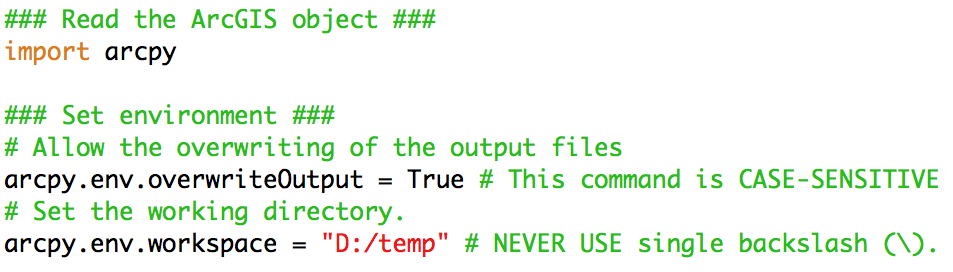

ArcGIS 10 for Economics Research
Lecture 2
Spatial Join
Masayuki Kudamatsu
6 May, 2016
Press SPACE to proceed.
To go back to the previous slide, press SHIFT+SPACE.
What is Spatial Join?
Match features from two vector datasets by proximity
Examples:
- Zip-code zones + Air pollution monitors (Currie & Neidell 2005)
- Ethnic homelands + Weather data grid points (Alsan 2015)
- Islands + Wind data grid cells (Feyrer & Sacerdote 2009)
- Surveyed villages + Weather data grid cells (Kudamatsu et al. 2012)
Benefits of Spatial Join
Make more research design feasible
- Weather data: often available at grid points
- Since weather is exogenous, causality can be established
Geographic zone fixed effects at very disaggregated level
Today's road map
1. Currie & Neidell (2005)
2. Alsan (2015)
3. Feyrer & Sacerdote (2009)
4. Kudamatsu et al. (2012)
5. Replicate Kudamatsu et al. (2012)
6. Introduction to Python for ArcGIS
1. Currie & Neidell (2005)
Research Question
Does air pollution cause infant mortality?
Important?
- Air quality regulations: costly
- Benefits need to be understood
- Insufficient evidence for impact on infant mortality
Original?
- Look at 1990s California (low level of air pollution)
- Look at three pollutants (CO, PM10, O3) altogether
- Weekly data at individal level
Feasible?
Data
Infant mortality: individual-level with zip-code of mothers' residency
Air pollution: monitor-level (geo-referenced)
Zip-code level pollution is obtained by:
1. Pick monitors w/i 20-mile radius of zip-code centroids
- Centroids: we will learn later
- 20-mile radius: Lecture 3
- Spatial Join: match the radius with monitors
2. Weighted-average pollution at these monitors by inverse of distance from zip-code centroid
- Distance between points: Lecture 4
Monitor locations & zip-code polygons
(taken from Neidell 2004)
Empirical specification
\begin{align*} P_{izt} = \boldsymbol{x}'_{zt}\boldsymbol{\beta} + \boldsymbol{z}'_i\boldsymbol{\gamma} + \boldsymbol{w}'_{zt}\boldsymbol{\delta} + \psi_{zt} + Y_{zt} + \alpha(t) + \varepsilon_{izt} \end{align*}
| $P_{izt}$ | Death indicator for baby $i$ in zipcode $z$ in week $t$ |
| $\boldsymbol{x}_{zt}$ | Pollution levels of CO, O3, PM10 |
| $\boldsymbol{z}_i$ | Individual controls (birthweight, etc.) |
| $\boldsymbol{w}_{zt}$ | Weather variables |
| $\psi_{zt}$ | Zipcode-by-month fixed effects |
| $Y_{zt}$ | Zipcode-by-year fixed effects |
| $\alpha(t)$ | Linear spline in weeks since birth (kinks at 1, 2, 4, 8, 12, 20, 32) |
Main results
(Table III of Currie & Neidell 2005)
(Table III of Currie & Neidell 2005)
2. Alsan (2015)

Research Question
Did Tsetse flies cause Africa's underdevelopment?
Important?
- Tsetse flies: believed to be the cause of low agricultural productivity and high transportation cost historically
- Path dependence may explain Africa's underdevelopment today
Original?
- No systematic evidence on the impact of Tsetse flies
- Find Tsetse flies prevented political centralization
Feasible?
Data
Ethnographic Atlas + Murdock (1959)'s map
- Pre-colonial data on use of domesticated animals, presence of intensive agriculture, political centralization
Weather in 1871 from the 20th century reanalysis at 2°x2° resolution
- Average daily mean temperature / humidity: fed into a model to predict Tsetse fly survival
Ethnic homeland polygons matched with weather grid points? (no description in the text)
Empirical specification
\begin{align*} Y_j = \alpha + \delta TSI_j + \boldsymbol{X}'_{j}\boldsymbol{\omega} + \varepsilon_{j} \end{align*}
| $Y_j$ | Precolonial outcome for ethnic group $j$ |
| $TSI_j$ | Tsetse fly suitability index |
| $\boldsymbol{X}_j$ | Controls (incl.\ temperature, humidity in 1871) |
Main Results
(Table 1 of Alsan 2015)
3. Feyrer & Sacerdote (2009)
Research Question
Did European colonization harm economic development of islands?
Important?
- The impact of colonial legacy: hotly debated (La Porta et al., Acemoglu et al., etc.)
Original?
- New dataset on islands
- "Homogeneous" initial conditions
- Exploit randomness of colonization: wind
Feasible?
Data
- GDP per capita, infant mortality
- Geographic coordinate
Year of colonization (collected by authors)
Wind speed & direction from CERSAT (1° x 1°)
Islands: matched with 1° x 1° cell polygons
Wind data for August 2001

(source: CERSAT website)
Empirical specification
\begin{align*} y_i = \alpha + \beta c_i + \boldsymbol{x}^{'}_i\boldsymbol{\gamma} + \varepsilon_i \end{align*}
| $y_i$ | Log GDP per capita / Infant mortality in island $i$ |
| $c_i$ | Length of colonial rule |
| $\boldsymbol{X}_i$ | Latitude, Surface area, Pacific / Atlantic dummies |
Instruments for $c_i$: mean & s.d. of east-west wind speed
First-stage Results
(Table A.1 of Feyrer & Sacerdote 2009)
Second-stage Results
(Table 2 of Feyrer & Sacerdote 2009)
4. Kudamatsu et al. (2012)
Research Question
How do annual weather fluctuations kill infants in Africa?
Important?
- Infant death: still a big issue in Africa
- Impliations for climate change impacts
Original?
- Continent-wide data to observe many rare weather events
- RCTs on combatting infant death: no statistical power to detect impact
Feasible?
Data
Infant mortality: Demographic and Health Surveys (DHS)
- Surveyed clusters (villages & town districts): geo-referenced by GPS receiver
Weather 1957-2002: ERA-40 reanalysis at 1.25° x 1.25°
- Monthly rainfall & temperature fed into a model to predict malaria transmission suitability
- Total rainfall during growing season
Clusters: matched with 1.25° x 1.25° cell polygons
DHS clusters & ERA-40 cells
(source: Figure 1 of Kudamatsu et al. 2012)
Empirical specification
\begin{align*} y_{i,c,s,y} * 1000 = & \ \boldsymbol{M}'_{g,s,y}\boldsymbol{\alpha} + \boldsymbol{R}'_{g,s,y}\boldsymbol{\beta} \\ & + \boldsymbol{W}'_{g,s,y}\boldsymbol{\gamma} + \mu_{c,s} + \eta_{x,y} + \delta^g T_{s,y} + \varepsilon_{i,c,s,y} \end{align*}
| $y_{i,c,s,y}$ | Death indicator for baby $i$ born in cluster $c$ in month $s$ of year $y$ |
| $\boldsymbol{M}_{g,s,y}$ | Malarious weather variables in cell $g$ |
| $\boldsymbol{R}_{g,s,y}$ | Growing-season rainfall variables in cell $g$ |
| $\boldsymbol{W}_{g,s,y}$ | Monthly rainfall and Temperature variables |
| $\mu_{c,s}$ | Cluster-by-month fixed effects |
| $\eta_{x,y}$ | Country-by-year fixed effects |
| $\delta^g T_{s,y}$ | Linear trend specific to cell $g$ |
Results on malarious weather
(source: Table 3 of Kudamatsu et al. 2012)
Results on growing-season rainfall
(source: Table 6 of Kudamatsu et al. 2012)
Prepare for the rest of this lecture
- Download the zipped dataset for lecture 2
- Right-click it and choose "Extract here"
- Launch ArcMap 10 (it takes time)
5. Replicate Kudamatsu et al. (2012)
we will learn how to:
1. Use the Spatial Join tool (Exercise 2)
2. Export attribute tables to Stata (Exercise 3)
3. Create a graticule shapefile (Exercise 1)
(Image taken from ArcGIS Help "What are grids and graticules?")
Why graticule shapefile?
In some datasets (weather data in particular), the unit of observations is a grid point (latitude and longitude at equal intervals).
Examples other than what we have already seen:
- WorldClim (Dell, Jones, & Olken 2009)
- GCPC (Miguel et al. 2004)
- TOMS air pollution index (Jayachandran 2009)
A graticule shapefile allows you to spatially merge such data with other data
Exercise #1
Create ERA-40 grid cell polygons
Geo-processing tools to be used for this exercise:
- Create Fishnet
- Define Projection (Data Management)
- Feature To Point
- Add XY Coordinates (Data Management)
- Spatial Join
As in Lecture 1, we use these tools in Model Builder.
- Create a Model
- Save it as "lecture2.tbx/exercise1" in "Lecture 2"
Exercise #1 (cont.)
ERA-40 data
Spatial resolution: 1.25° x 1.25°
Africa: roughly spans within
- 40° S to 40° N
- 20° W to 60° E
$\Rightarrow$ Create square polygons whose centroid is from (-20°, -40°) to (60°, 40°) at the interval of 1.25°
- We will see why polygons, not points
Exercise #1: Step 1
Create Fishnet
Output Feature Class: ...\Lecture2\outputs\fishnet.shp
- Always good idea to save outputs in a different directory (Lecture2/outputs, in this case)
Fishnet Origin Coordinate
X Coordinate: -20.625
Y Coordinate: -40.625
$\Rightarrow$ Bottom-left polygon's centroid will be (-20°, -40°)
Create Fishnet (cont.)
Y-Axis Coordinate
X Coordinate: -20.625
Y Coordinate: -10.625 (or any value other than -40.625)
$\Rightarrow$ Y-Axis will be perpendicular to the horizontal X-Axis
Number of Rows: 65
- (40-(-40))/1.25 + 1 = 65
Number of Columns: 65
- (60-(-20))/1.25 + 1 = 65
Create Fishnet (cont.)
Uncheck "Create Label Points"
- Label points: unnecessary for our purpose
- Model Builder will still show label points as an output from Create Fishnet. This is a bug.
Geometry Type: POLYGON
- By default, this option is set as POLYLINE. Make sure to change it.
Exercise #1 (cont.)
Create Fishnet does not assign any coordination system to the output file
DHS cluster location data uses WGS 1984
$\Rightarrow$ Assign WGS 1984
How? We already learned this in Lecture 1 Exercise 6.
Exercise #1: Step 2
Define Projection (Data Management)
Input Dataset or Feature Class: fishnet.shp
- Use the drop down menu to choose the output from Create Fishnet
Coordinate System: GCS_WGS_1984
-
Click

- Navigate to Geographic Coordinate Systems > World > WGS 1984
Exercise #1 (cont.)
Now save and run the Model.
Browse the output.
Overlay African country polygons.
- ntblnds_africa.shp (included in the downloaded dataset)
ERA-40 cell polygons should cover the whole Africa.
Exercise #1 (cont.)
Browse the attribute table of the output (cf. Lecture 1)
We don't see centroid coordinates...
$\Rightarrow$ Next three geo-processing tools will add them to the attribute table
Exercise #1: Step 3
Feature To Point
Creates a point feature class of centroids of the input polygon (or polyline) features
Input Features: fishnet.shp (2)
- This is the output from Define Projection
- Don't choose fishnet.shp (which is the output from Create Fishnet)
Output Feature Class: ...\Lecture2\outputs\centroids.shp
Uncheck "Inside"
- This option doesn't work properly
Exercise #1 (cont.)
Feature To Point doesn't add coordinates to the attribute table of the output. So...
Exercise #1: Step 4
Add XY Coordinates (Data Management)
Add input point features's coordinates to the attribute table
Input Features: centroids.shp
- The output from Feature To Point
NOTE: This tool overwrites the input data.
- If the input file needs to be preserved, use Copy Features first (as in Lecture 1 Exercise 6).
Exercise #1 (cont.)
Now save and run the Model.
Browse the output and its attribute table.
Is everything as expected?
Exercise #1 (cont.)
Now attach these centroid coordinates to the original polygon features
Spatial Join does this.
Exercise #1: Step 5
Spatial Join
Target Feature Class: fishnet.shp (2)
- The output from Define Projection
Join Features: centroids.shp (2)
- The output from Add XY Coordinates
Output Feature Class: ...\Lecture2\outputs\era40cells.shp
Spatial Join (cont.)
Join Operation: JOIN_ONE_TO_ONE
- We match each cell polygon with one centroid point
Check "Keep All Target Features"
- If unchecked, those not matched will be dropped
Field Map of Join Features: leave as it is
- We will learn about this option in Lecture 3
Match Option: INTERSECT
- Each cell polygon should match with the centroid that intersects it
Exercise #1 (it's over, finally)
Now save and run the Model.
Browse the output and its attribute table.
Is everything as expected?
Exercise #2
Merge DHS clusters with ERA-40 cells
1. Create a point feature class of DHS cluster locations
- We have XY data of DHS clusters (Lecture2/dhs.txt)
- Due to confidentiality requirements for data use, the file drops the original cluster and survey IDs
- Which geo-processing tools should we use? (hint: Lecture 1 Exercise 3)
2. Spatially merge DHS cluster points with ERA-40 cell polygons by Spatial Join
We build these on the Model for Excercise 1
Exercise #2: Step 1
Make XY Event Layer
XY Table: ...\Lecture2\dhs.txt
X Field: longnum
Y Field: latnum
Spatial Reference: GCS_WGS_1984
-
Click
- Navigate to Geographic Coordinate Systems > World > WGS 1984
Leave the other options as they are.
Exercise #2: Step 1 (cont.)
Copy Features
Input Features: dhs_Layer
- The output from Make XY Event Layer
Output Feature Class: ...\Lecture2\outputs\dhs.shp
Exercise #2 (cont.)
Now save and run the Model.
Browse the output and its attribute table.
Is everything as expected?
Exercise #2: Step 2
Spatial Join
Target Feature Class: dhs.shp
- The output from Copy Features
Join Features: era40cells.shp
- The output from Spatial Join (in Exercise 1)
Output Feature Class: ...\Lecture2\outputs\dhs_era40.shp
Spatial Join (cont.)
Join Operation: JOIN_ONE_TO_ONE
- We match each DHS cluster with one ERA-40 cell
Check "Keep All Target Features"
- We want to know which DHS clusters are not matched with ERA-40 data, if any
Field Map of Join Features: leave as it is
Match Option: INTERSECT
- Each DHS cluster should match with the ERA-40 cell that intersects it
Exercise #2 (it's over)
Now save and run the Model.
- I deliberately repeat this slide so you will form the habit of saving the Model before running it.
Browse the output and its attribute table.
Is everything as expected?
Why cell polygon for ERA-40?
Why don't we match DHS clusters with ERA-40 cell centroids?
Doing this with Spatial Join (CLOSEST as the Match Option) will take a lot of time
- Each of over 17,000 DHS cluster points will be matched with the nearest of over 700 ERA-40 cell centroid points
Much quicker to match points with polygons by INTERSECT
Export to Stata
Now we want to export the attribute table of dhs_era40.shp to Stata
- Then we can merge DHS data with ERA-40 data
3 ways to export the attribute table to the format readable by Stata
- Table To Excel
- Export Feature Attribute to ASCII
- shp2dta (a STATA ado)
Export to Stata (cont.)
Table To Excel
Converts the attribute table into an Excel file
Then use import excel in Stata
But Excel cannot handle more than 65535 rows...
Export to Stata (cont.)
Export Feature Attribute to ASCII
Converts the attribute table into an ASCII text file
Then use insheet in Stata
-
Or
import delimitedin Stata 14
This tool will automatically add centroid coordinates to the output ASCII file
Export to Stata (cont.)
shp2dta
This Stata ado directly reads a shapefile's attribute table
But it works only with polygons
Exercise #3
Export Attribute Table
1. Table To Excel
- Input Table: dhs_era40.shp
- Output Excel File: ...\Lecture2\outputs\dhs_era40.xls
2. Export Feature Attribute to ASCII
- Input Feature Class: dhs_era40.shp
- Value Field: clusterid, POINT_X, POINT_Y
- Delimiter: COMMA
- Output ASCII File: ...\Lecture2\outputs\dhs_era40.csv
- Check "Add Field Name to Output"
Exercise #3 (cont.)
Browse the exported tables
dhs_era40.csv has two additional columns
- XCoord: longitude
- YCoord: latitude
Export Feature Attribute to ASCII may be preferrable
- Lets you control which fields to be exported
- ArcGIS tends to create tons of garbage fields
But Table To Excel is simpler to execute
"Model" model for Lecture 2
Look at "solutions4exercises/lec2model.tbx/exercises1-3" in the downloaded data folder for Lecture 2
6. Introduction to Python for ArcGIS
Why Python?
Essential for replication
Convenient to repeat the same geo-processing
- When you obtain the updated version of input datasets
- When you change a process in the upstream
- Within a script by using a loop (L3, L6, L8)
How to write a Python script for ArcGIS?
Use Model Builder to write a draft script
Then edit the draft script
Throughout the course, we will learn various scripting tips
Exercise #4
Export Python script from Model Builder
1. Right-click the model and click "Edit" in Catalogue Window
- If the model was saved before and is not opened yet
2. Click in the menu bar "Model > Export > To Python Script"
3. Save as ***.py
How to edit Python scripts
Use Python's default editor IDLE
Or use your favourite text editor if you have one
To run the script, IDEL is the most straightforward (press F5)
Exercise #5
Use Python IDLE
1. Click the Windows icon at the bottom-left
2. Click "All programs > ArcGIS > Python 2.7 > IDLE (Python GUI)"
3. Click "File > Open" to read a script
How to edit Python scripts (cont.)
Have your own template script for executing ArcGIS geo-processing tools
Then copy-and-paste command lines from the exported script to your template
- This saves time
- Also avoid error making
For this lecture, I prepare the template (Lecture2/template4L2.py) for you
How to edit Python scripts (cont.)
Using this template script, we now learn the basics of Python scripting for ArcGIS
To learn Python in general:
- Codecademy (for interactive tutorials)
- "Free GIS Programming Tutorials: Learn How to Code" by GIS Geography (for other tutorials)
Python Essentials for ArcGIS
1. Object, Property, Method
2. Try-Except statement
3. String variables
4. Print
5. Comments
Python Essentials for ArcGIS #1.1
Object
An object is a set of commands
-
arcpyis an object containing all the ArcGIS geoprocessing tools
The import command reads this object (i.e. launch ArcGIS)
Object (cont.)
An object may contain smaller objects
-
arcpy.envis an object contained inarcpy
Two types of commands in an object: property and method
Python Essentials for ArcGIS #1.2
Property
Contains a value (numbers, strings, True/False)
To assign a new value of the property, type:
object.property = value
-
overwriteOutput: whether the overwriting of output files is allowed -
workspace: working directory name
Overwriting output files
By default, overwriting the output file is not allowed.
- Run a script. Browse the output. You're not satisfied. Revise the script. Run the script again.
- You'll then get an error.
The following command line (case-sensitive!)
arcpy.env.overwriteOutput = True
allows you to overwrite output files.
- Python is case-sensitive
Directory Name in Python
Never use \
- In Python, \ is used for line continuation
- In Windows, \ is used for directory path
Use / or \\
- The script exported from Model Builder uses \\
Python Essentials for ArcGIS #1.3
Method
is a function (i.e. process inputs to create outputs)
To use a method, type:
object.method(arg1, arg2, ...)
Each geo-processing tool in ArcGIS is a method of the arcpy object
Exported Python script
Why we use Model Builder
The arcpy method names mix uppercase and lowercase letters as well as underscores
Arguments for these methods are often very long with lots of [ ] " ' ; ,
$\Rightarrow$ Better to first use Model Builder to export the draft script
Online Help for Arcpy Methods
Visit ArcGIS for Desktop website and type the method name in the search field at the top row
- There's a built-in help, too, but the web version is more often updated
Python Essentials for ArcGIS #2
Try-Except statement
If you simply run commands and get an error, you won't get a message on what went wrong
Try-except statement is essential to know what the error is about
Try-Except statement (cont.)
Python first attempts to execute indented commands below try:
If there is no error:
Pythoh skip all the indented commands after except:
If there is an error:
Python execute the indented commands below except:
$\Rightarrow$ Write commands for error messages after except:
Exercise #6
Use try-except statement
1. Copy the geoprocessing commands in the exported script
2. Paste them between try: and except: in the template script
3. Select commands to be indented
4. Click "Format > Indent Region"
- Best avoid using the tab key to indent commands
You should have something like this:
arcpy.env.workspace = "D:/temp" # NEVER USE single backslash (\).
### Local variables ###
////PASTE HERE//// # local variables from the exported script
############################## Geoprocessing ##########################
try:
# Process: Create Fishnet
arcpy.CreateFishnet_management(fishnet_shp, "-20.625 -40.625", "-20.625 -10.625", "1.25", "1.25", "65", "65", "", "NO_LABELS", "DEFAULT", "POLYGON")
# Process: Make XY Event Layer
arcpy.MakeXYEventLayer_management(dhs_txt, "longnum", "latnum", dhs_Layer, "GEOGCS['GCS_WGS_1984',DATUM['D_WGS_1984',SPHEROID['WGS_1984',6378137.0,298.257223563]],PRIMEM['Greenwich',0.0],UNIT['Degree',0.0174532925199433]];-400 -400 1000000000;-100000 10000;-100000 10000;8.98315284119522E-09;0.001;0.001;IsHighPrecision", "")
# Process: Copy Features
arcpy.CopyFeatures_management(dhs_Layer, dhs_shp, "", "0", "0", "0")
# Process: Define Projection
arcpy.DefineProjection_management(fishnet_shp, "GEOGCS['GCS_WGS_1984',DATUM['D_WGS_1984',SPHEROID['WGS_1984',6378137.0,298.257223563]],PRIMEM['Greenwich',0.0],UNIT['Degree',0.0174532925199433]]")
# Process: Feature To Point
arcpy.FeatureToPoint_management(fishnet_shp__2_, centroids_shp, "CENTROID")
# Process: Add XY Coordinates
arcpy.AddXY_management(centroids_shp)
# Process: Spatial Join
arcpy.SpatialJoin_analysis(fishnet_shp__2_, centroids_shp__2_, era40cells_shp, "JOIN_ONE_TO_ONE", "KEEP_ALL", "Id \"Id\" true true false 6 Long 0 6 ,First,#,C:\\Users\\MA.4193\\Downloads\\Lecture2\\outputs\\fishnet.shp,Id,-1,-1;Id_1 \"Id_1\" true true false 6 Long 0 6 ,First,#,C:\\Users\\MA.4193\\Downloads\\Lecture2\\outputs\\centroids.shp,Id,-1,-1;ORIG_FID \"ORIG_FID\" true true false 10 Long 0 10 ,First,#,C:\\Users\\MA.4193\\Downloads\\Lecture2\\outputs\\centroids.shp,ORIG_FID,-1,-1;POINT_X \"POINT_X\" true true false 19 Double 0 0 ,First,#,C:\\Users\\MA.4193\\Downloads\\Lecture2\\outputs\\centroids.shp,POINT_X,-1,-1;POINT_Y \"POINT_Y\" true true false 19 Double 0 0 ,First,#,C:\\Users\\MA.4193\\Downloads\\Lecture2\\outputs\\centroids.shp,POINT_Y,-1,-1", "INTERSECT", "", "")
# Process: Spatial Join (2)
arcpy.SpatialJoin_analysis(dhs_shp, era40cells_shp, dhs_era40_shp, "JOIN_ONE_TO_ONE", "KEEP_ALL", "latnum \"latnum\" true true false 19 Double 0 0 ,First,#,C:\\Users\\MA.4193\\Downloads\\Lecture2\\outputs\\dhs.shp,latnum,-1,-1;longnum \"longnum\" true true false 19 Double 0 0 ,First,#,C:\\Users\\MA.4193\\Downloads\\Lecture2\\outputs\\dhs.shp,longnum,-1,-1;clusterid \"clusterid\" true true false 10 Long 0 10 ,First,#,C:\\Users\\MA.4193\\Downloads\\Lecture2\\outputs\\dhs.shp,clusterid,-1,-1;Join_Count \"Join_Count\" true true false 10 Long 0 10 ,First,#,C:\\Users\\MA.4193\\Downloads\\Lecture2\\outputs\\era40cells.shp,Join_Count,-1,-1;TARGET_FID \"TARGET_FID\" true true false 10 Long 0 10 ,First,#,C:\\Users\\MA.4193\\Downloads\\Lecture2\\outputs\\era40cells.shp,TARGET_FID,-1,-1;Id \"Id\" true true false 6 Long 0 6 ,First,#,C:\\Users\\MA.4193\\Downloads\\Lecture2\\outputs\\era40cells.shp,Id,-1,-1;Id_1 \"Id_1\" true true false 6 Long 0 6 ,First,#,C:\\Users\\MA.4193\\Downloads\\Lecture2\\outputs\\era40cells.shp,Id_1,-1,-1;ORIG_FID \"ORIG_FID\" true true false 10 Long 0 10 ,First,#,C:\\Users\\MA.4193\\Downloads\\Lecture2\\outputs\\era40cells.shp,ORIG_FID,-1,-1;POINT_X \"POINT_X\" true true false 19 Double 0 0 ,First,#,C:\\Users\\MA.4193\\Downloads\\Lecture2\\outputs\\era40cells.shp,POINT_X,-1,-1;POINT_Y \"POINT_Y\" true true false 19 Double 0 0 ,First,#,C:\\Users\\MA.4193\\Downloads\\Lecture2\\outputs\\era40cells.shp,POINT_Y,-1,-1", "INTERSECT", "", "")
# Process: Table To Excel
arcpy.TableToExcel_conversion(dhs_era40_shp, dhs_era40_xls, "NAME", "CODE")
# Process: Export Feature Attribute to ASCII
arcpy.ExportXYv_stats(dhs_era40_shp, "clusterid;POINT_X;POINT_Y", "COMMA", dhs_era40_csv, "ADD_FIELD_NAMES")
# Return geoprocessing specific errors
except arcpy.ExecuteError:
print arcpy.GetMessages()
# Return any other type of error
Python Essentials for ArcGIS #3
String variables
It's a Python's equivalent of local macro in Stata
Recommended to assign a string variable to each data file name in the Python script
- You may later want to use a different input file for the same data processing
- Then you just need to change one line in the script where the input file name is defined
String variables (cont.)
To create a variable called file1 which contains a string data.shp, type
file1 = "data.shp"
- Don't forget to enclose the file name with double quotation marks
Exercise #7
Edit file names
1. Copy local variables in the exported script
2. Paste them before try: in the template script
3. Sort these names by inputs, intermediates, and outputs
4. Assign the directory path for outputs to arcpy.env.workspace
5. Delete the directory path for outputs and intermediates
Exercise #7 (cont.)
You should now notice the variable fishnet_shp__2_ contains the same file name as fishnet_shp
Same for centroids_shp__2_
This happens when we use overwriting geoprocessing tools (Define Projection, Add XY Coordinates)
It's confusing. So:
6. Use "Edit > Replace" to replace:
-
fishnet_shp__2_withfishnet_shp -
centroids_shp__2_withcentroids_shp
7. Delete the duplicated lines
You should now have something like this:
import arcpy
### Set environment ###
# Allow the overwriting of the output files
arcpy.env.overwriteOutput = True # This command is CASE-SENSITIVE
# Set the working directory.
arcpy.env.workspace = "C:\\Users\\MA.4193\\Downloads\\Lecture2\\outputs" # NEVER USE single backslash (\).
### Local variables ###
dhs_txt = "C:\\Users\\MA.4193\\Downloads\\Lecture2\\dhs.txt"
fishnet_shp = "fishnet.shp"
centroids_shp = "centroids.shp"
dhs_Layer = "dhs_Layer"
dhs_shp = "dhs.shp"
era40cells_shp = "era40cells.shp"
dhs_era40_shp = "dhs_era40.shp"
dhs_era40_xls = "dhs_era40.xls"
dhs_era40_csv = "dhs_era40.csv"
############################## Geoprocessing ##########################
try:
# Process: Create Fishnet
Python Essentials for ArcGIS #4
It's a Python's equivalent of display in Stata
To show a message on the IDLE screen while running the script, type:
print "message"
- Tells which part of the script is currently run
- Lets you know where the script caused an error
- Can be used to display a value that a method returns
print arcpy.GetMessages()
Exercise #8
Add print commands
For each geo-processing step, add the print command to explain what's being processsed.
Also add the print commands at the beginning of the script
You should now have something like this:
############################## Preamble #################################
### Read the ArcGIS object ###
print "Launch ArcGIS"
import arcpy
### Set environment ###
# Allow the overwriting of the output files
print "Enable the overwriting"
arcpy.env.overwriteOutput = True # This command is CASE-SENSITIVE
# Set the working directory.
print "Set the directory where outputs are saved"
arcpy.env.workspace = "C:\\Users\\MA.4193\\Downloads\\Lecture2\\outputs" # NEVER USE single backslash (\).
### Local variables ###
print "Define input files"
dhs_txt = "C:\\Users\\MA.4193\\Downloads\\Lecture2\\dhs.txt"
print "Define intermediate files"
fishnet_shp = "fishnet.shp"
centroids_shp = "centroids.shp"
dhs_Layer = "dhs_Layer"
print "Define output files"
dhs_shp = "dhs.shp"
era40cells_shp = "era40cells.shp"
dhs_era40_shp = "dhs_era40.shp"
dhs_era40_xls = "dhs_era40.xls"
dhs_era40_csv = "dhs_era40.csv"
You should now have something like this (cont.):
############################## Geoprocessing ##########################
try:
# Process: Make XY Event Layer
print "Create DHS cluster point features 1/2"
arcpy.MakeXYEventLayer_management(dhs_txt, "longnum", "latnum", dhs_Layer, "GEOGCS['GCS_WGS_1984',DATUM['D_WGS_1984',SPHEROID['WGS_1984',6378137.0,298.257223563]],PRIMEM['Greenwich',0.0],UNIT['Degree',0.0174532925199433]];-400 -400 1000000000;-100000 10000;-100000 10000;8.98315284119522E-09;0.001;0.001;IsHighPrecision", "")
# Process: Copy Features
print "Create DHS cluster point features 2/2"
arcpy.CopyFeatures_management(dhs_Layer, dhs_shp, "", "0", "0", "0")
# Process: Create Fishnet
print "Create ERA-40 cell polygons step 1/5: Create Fishnet"
arcpy.CreateFishnet_management(fishnet_shp, "-20.625 -40.625", "-20.625 -10.625", "1.25", "1.25", "65", "65", "", "NO_LABELS", "DEFAULT", "POLYGON")
# Process: Define Projection
print "Create ERA-40 cell polygons step 2/5: Define Projection"
arcpy.DefineProjection_management(fishnet_shp, "GEOGCS['GCS_WGS_1984',DATUM['D_WGS_1984',SPHEROID['WGS_1984',6378137.0,298.257223563]],PRIMEM['Greenwich',0.0],UNIT['Degree',0.0174532925199433]]")
# Process: Feature To Point
print "Create ERA-40 cell polygons step 3/5: Feature To Point"
arcpy.FeatureToPoint_management(fishnet_shp, centroids_shp, "CENTROID")
# Process: Add XY Coordinates
print "Create ERA-40 cell polygons step 4/5: Add XY Coordinates"
arcpy.AddXY_management(centroids_shp)
# Process: Spatial Join
print "Create ERA-40 cell polygons step 5/5: Spatial Join"
arcpy.SpatialJoin_analysis(fishnet_shp, centroids_shp, era40cells_shp, "JOIN_ONE_TO_ONE", "KEEP_ALL", "Id \"Id\" true true false 6 Long 0 6 ,First,#,C:\\Users\\MA.4193\\Downloads\\Lecture2\\outputs\\fishnet.shp,Id,-1,-1;Id_1 \"Id_1\" true true false 6 Long 0 6 ,First,#,C:\\Users\\MA.4193\\Downloads\\Lecture2\\outputs\\centroids.shp,Id,-1,-1;ORIG_FID \"ORIG_FID\" true true false 10 Long 0 10 ,First,#,C:\\Users\\MA.4193\\Downloads\\Lecture2\\outputs\\centroids.shp,ORIG_FID,-1,-1;POINT_X \"POINT_X\" true true false 19 Double 0 0 ,First,#,C:\\Users\\MA.4193\\Downloads\\Lecture2\\outputs\\centroids.shp,POINT_X,-1,-1;POINT_Y \"POINT_Y\" true true false 19 Double 0 0 ,First,#,C:\\Users\\MA.4193\\Downloads\\Lecture2\\outputs\\centroids.shp,POINT_Y,-1,-1", "INTERSECT", "", "")
# Process: Spatial Join (2)
print "Merge DHS clusters with ERA-40 cell polygons"
arcpy.SpatialJoin_analysis(dhs_shp, era40cells_shp, dhs_era40_shp, "JOIN_ONE_TO_ONE", "KEEP_ALL", "latnum \"latnum\" true true false 19 Double 0 0 ,First,#,C:\\Users\\MA.4193\\Downloads\\Lecture2\\outputs\\dhs.shp,latnum,-1,-1;longnum \"longnum\" true true false 19 Double 0 0 ,First,#,C:\\Users\\MA.4193\\Downloads\\Lecture2\\outputs\\dhs.shp,longnum,-1,-1;clusterid \"clusterid\" true true false 10 Long 0 10 ,First,#,C:\\Users\\MA.4193\\Downloads\\Lecture2\\outputs\\dhs.shp,clusterid,-1,-1;Join_Count \"Join_Count\" true true false 10 Long 0 10 ,First,#,C:\\Users\\MA.4193\\Downloads\\Lecture2\\outputs\\era40cells.shp,Join_Count,-1,-1;TARGET_FID \"TARGET_FID\" true true false 10 Long 0 10 ,First,#,C:\\Users\\MA.4193\\Downloads\\Lecture2\\outputs\\era40cells.shp,TARGET_FID,-1,-1;Id \"Id\" true true false 6 Long 0 6 ,First,#,C:\\Users\\MA.4193\\Downloads\\Lecture2\\outputs\\era40cells.shp,Id,-1,-1;Id_1 \"Id_1\" true true false 6 Long 0 6 ,First,#,C:\\Users\\MA.4193\\Downloads\\Lecture2\\outputs\\era40cells.shp,Id_1,-1,-1;ORIG_FID \"ORIG_FID\" true true false 10 Long 0 10 ,First,#,C:\\Users\\MA.4193\\Downloads\\Lecture2\\outputs\\era40cells.shp,ORIG_FID,-1,-1;POINT_X \"POINT_X\" true true false 19 Double 0 0 ,First,#,C:\\Users\\MA.4193\\Downloads\\Lecture2\\outputs\\era40cells.shp,POINT_X,-1,-1;POINT_Y \"POINT_Y\" true true false 19 Double 0 0 ,First,#,C:\\Users\\MA.4193\\Downloads\\Lecture2\\outputs\\era40cells.shp,POINT_Y,-1,-1", "INTERSECT", "", "")
# Process: Table To Excel
print "Export Excel file"
arcpy.TableToExcel_conversion(dhs_era40_shp, dhs_era40_xls, "NAME", "CODE")
# Process: Export Feature Attribute to ASCII
print "Export CSV file"
arcpy.ExportXYv_stats(dhs_era40_shp, "clusterid;POINT_X;POINT_Y", "COMMA", dhs_era40_csv, "ADD_FIELD_NAMES")
# Return geoprocessing specific errors
Python Essentials for ArcGIS #5
Comment
To insert comments, type # at the beginning of a comment
Useful for others to understand (and for you to remember) what each command does
Also useful if you want to skip some commands for the time being
Exercise #9
Skip command lines temporarily
Suppose you're not sure if this script will properly create DHS cluster point features.
So you want to skip the other parts of the script for the time being.
1. Select command lines to be skipped
-
Don't skip the
except:part - You want to show the error message
2. Click "Format > Comment Out Region"
$\Rightarrow$ ## will appear at the beginning of selected commands
You should have something like this:
try:
# Process: Make XY Event Layer
print "Create DHS cluster point features 1/2"
arcpy.MakeXYEventLayer_management(dhs_txt, "longnum", "latnum", dhs_Layer, "GEOGCS['GCS_WGS_1984',DATUM['D_WGS_1984',SPHEROID['WGS_1984',6378137.0,298.257223563]],PRIMEM['Greenwich',0.0],UNIT['Degree',0.0174532925199433]];-400 -400 1000000000;-100000 10000;-100000 10000;8.98315284119522E-09;0.001;0.001;IsHighPrecision", "")
# Process: Copy Features
print "Create DHS cluster point features 2/2"
arcpy.CopyFeatures_management(dhs_Layer, dhs_shp, "", "0", "0", "0")
## # Process: Create Fishnet
## print "Create ERA-40 cell polygons step 1/5: Create Fishnet"
## arcpy.CreateFishnet_management(fishnet_shp, "-20.625 -40.625", "-20.625 -10.625", "1.25", "1.25", "65", "65", "", "NO_LABELS", "DEFAULT", "POLYGON")
##
## # Process: Define Projection
## print "Create ERA-40 cell polygons step 2/5: Define Projection"
## arcpy.DefineProjection_management(fishnet_shp, "GEOGCS['GCS_WGS_1984',DATUM['D_WGS_1984',SPHEROID['WGS_1984',6378137.0,298.257223563]],PRIMEM['Greenwich',0.0],UNIT['Degree',0.0174532925199433]]")
##
## # Process: Feature To Point
## print "Create ERA-40 cell polygons step 3/5: Feature To Point"
## arcpy.FeatureToPoint_management(fishnet_shp, centroids_shp, "CENTROID")
##
## # Process: Add XY Coordinates
## print "Create ERA-40 cell polygons step 4/5: Add XY Coordinates"
## arcpy.AddXY_management(centroids_shp)
##
## # Process: Spatial Join
## print "Create ERA-40 cell polygons step 5/5: Spatial Join"
## arcpy.SpatialJoin_analysis(fishnet_shp, centroids_shp, era40cells_shp, "JOIN_ONE_TO_ONE", "KEEP_ALL", "Id \"Id\" true true false 6 Long 0 6 ,First,#,C:\\Users\\MA.4193\\Downloads\\Lecture2\\outputs\\fishnet.shp,Id,-1,-1;Id_1 \"Id_1\" true true false 6 Long 0 6 ,First,#,C:\\Users\\MA.4193\\Downloads\\Lecture2\\outputs\\centroids.shp,Id,-1,-1;ORIG_FID \"ORIG_FID\" true true false 10 Long 0 10 ,First,#,C:\\Users\\MA.4193\\Downloads\\Lecture2\\outputs\\centroids.shp,ORIG_FID,-1,-1;POINT_X \"POINT_X\" true true false 19 Double 0 0 ,First,#,C:\\Users\\MA.4193\\Downloads\\Lecture2\\outputs\\centroids.shp,POINT_X,-1,-1;POINT_Y \"POINT_Y\" true true false 19 Double 0 0 ,First,#,C:\\Users\\MA.4193\\Downloads\\Lecture2\\outputs\\centroids.shp,POINT_Y,-1,-1", "INTERSECT", "", "")
##
## # Process: Spatial Join (2)
## print "Merge DHS clusters with ERA-40 cell polygons"
## arcpy.SpatialJoin_analysis(dhs_shp, era40cells_shp, dhs_era40_shp, "JOIN_ONE_TO_ONE", "KEEP_ALL", "latnum \"latnum\" true true false 19 Double 0 0 ,First,#,C:\\Users\\MA.4193\\Downloads\\Lecture2\\outputs\\dhs.shp,latnum,-1,-1;longnum \"longnum\" true true false 19 Double 0 0 ,First,#,C:\\Users\\MA.4193\\Downloads\\Lecture2\\outputs\\dhs.shp,longnum,-1,-1;clusterid \"clusterid\" true true false 10 Long 0 10 ,First,#,C:\\Users\\MA.4193\\Downloads\\Lecture2\\outputs\\dhs.shp,clusterid,-1,-1;Join_Count \"Join_Count\" true true false 10 Long 0 10 ,First,#,C:\\Users\\MA.4193\\Downloads\\Lecture2\\outputs\\era40cells.shp,Join_Count,-1,-1;TARGET_FID \"TARGET_FID\" true true false 10 Long 0 10 ,First,#,C:\\Users\\MA.4193\\Downloads\\Lecture2\\outputs\\era40cells.shp,TARGET_FID,-1,-1;Id \"Id\" true true false 6 Long 0 6 ,First,#,C:\\Users\\MA.4193\\Downloads\\Lecture2\\outputs\\era40cells.shp,Id,-1,-1;Id_1 \"Id_1\" true true false 6 Long 0 6 ,First,#,C:\\Users\\MA.4193\\Downloads\\Lecture2\\outputs\\era40cells.shp,Id_1,-1,-1;ORIG_FID \"ORIG_FID\" true true false 10 Long 0 10 ,First,#,C:\\Users\\MA.4193\\Downloads\\Lecture2\\outputs\\era40cells.shp,ORIG_FID,-1,-1;POINT_X \"POINT_X\" true true false 19 Double 0 0 ,First,#,C:\\Users\\MA.4193\\Downloads\\Lecture2\\outputs\\era40cells.shp,POINT_X,-1,-1;POINT_Y \"POINT_Y\" true true false 19 Double 0 0 ,First,#,C:\\Users\\MA.4193\\Downloads\\Lecture2\\outputs\\era40cells.shp,POINT_Y,-1,-1", "INTERSECT", "", "")
##
## # Process: Table To Excel
## print "Export Excel file"
## arcpy.TableToExcel_conversion(dhs_era40_shp, dhs_era40_xls, "NAME", "CODE")
##
## # Process: Export Feature Attribute to ASCII
## print "Export CSV file"
## arcpy.ExportXYv_stats(dhs_era40_shp, "clusterid;POINT_X;POINT_Y", "COMMA", dhs_era40_csv, "ADD_FIELD_NAMES")
# Return geoprocessing specific errors
except arcpy.ExecuteError:
print arcpy.GetMessages()
Exercise #9 (cont.)
3. Save and run the script (press F5)
4. Cross your fingers :)
5. Check if DHS cluster point features are created properly.
6. If so, uncomment those skipped commands
7. Save and run the script (press F5)
8. Cross your fingers :)
9. Check if everything is as expected
Exercise #9 (cont.)
Most likely, you get an error message "ERROR 000464: Cannot get exclusive schema lock."
This error occurs when the script is trying to overwrite the output that's been shown in ArcMap
Before you run the Python script, close all the output files in ArcMap
Error handling
Sometimes, the output file is not what you intended.
e.g., New fields in the attribute table are all zero
Revising the script may not solve the issue / You cannot find anything wrong with the script
If so, reboot Windows. This often solves the issue.
Still unsolved, ask Google.
- Someone else may have had the same problem and posted the question on the web
- And ArcGIS experts may have answered the question
Last resort: ask at Stack Exchange or ArcGIS Forum.
Model Python Script for Lecture 2
Look at "solutions4exercises/lec2script.py" in the downloaded data folder for Lecture 2
What we've learned on ArcGIS
- Create a graticule shapefile
- Merge two vector datasets spatially
Do you remember which geo-processing tools you used for each of these tasks?